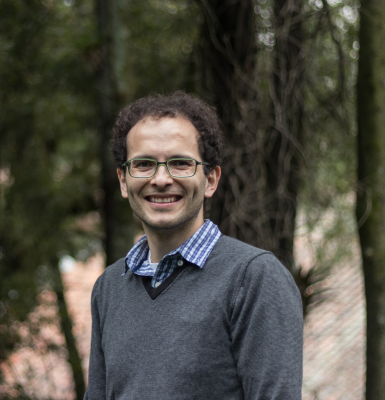

|

Hosted by:

Guest members of:

|
|
Camilo Aponte-Santamaría

PubMed
|
ORCID |
Research Gate |
Google Scholar |
h-index: 13
Curriculum Vitae
| 2017- |
Group leader,
Max Planck Tandem Group on Computational Biophysics, University of los Andes, Bogotá (Colombia)
|
| 2012-2017 |
Postdoc,
at the group of Prof. Frauke Gräter, Heidelberg Institute for Theoretical Studies (HITS), Heidelberg (Germany)
|
| 2015-spring |
Visiting Postdoc,
at the group of Prof. Alfredo Alexander-Katz, MIT, Cambridge (USA)
|
| 2011 |
Postdoc,
at the group of Prof. Bert de Groot, Max Planck Institute for Biophysical Chemistry, Göttingen (Germany)
|
| 2007-2011 |
Doctor in Natural Sciences,
Max Planck Institute for Biophysical Chemistry/University of Göttingen, Göttingen (Germany),
Supervisor: Prof. Bert de Groot.
Thesis project: Understanding the molecular machinery of aquaporins through molecular dynamics simulations
|
| 2005-2007 |
Master of Science on Physics,
National University of Colombia, Bogotá (Colombia),
Supervisor: Prof. José Daniel Muñoz.
Thesis project: Brownian Dynamics simulations of the rotation of the F1-ATPase molecular motor
|
| 2000-2005 |
Physics,
National University of Colombia, Bogotá (Colombia),
Supervisor: Prof. Ramón Fayad and Prof. José Daniel Muñoz.
Thesis project: The Gramicidin A Channel: A comparison between an elemental permeation model and a Brownian Dynamics simulation.
|
| 1994-1999 |
High school,
Colegio CAFAM, Bogotá (Colombia)
|
Thesis
PhD
Understanding the molecular machinery of aquaporins through molecular dynamics simulations.
Physics Faculty, Georg August Göttingen University, Göttingen (Germany).
February 28 (2011).
[www]
Master
Simulación de la rotación del motor molecular f1-ATPasa por el método de dinámica browniana
Physics Department, National University of Colombia, Bogotá (Colombia).
August (2007).
[www]
Physics
El canal Gramicidina A: comparación entre un modelo elemental de permeación y una simulación por el método de dinámica browniana
Physics Department, National University of Colombia, Bogotá (Colombia). January
(2005).
[www]
|